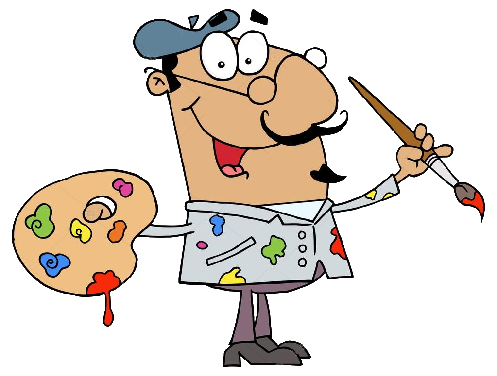
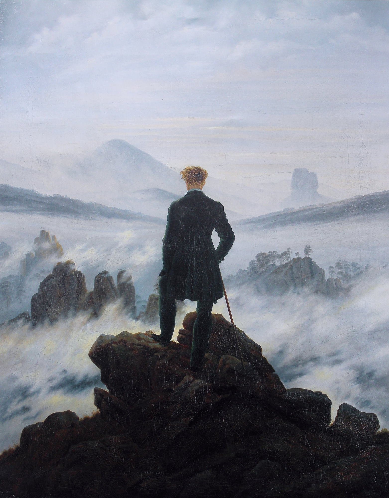
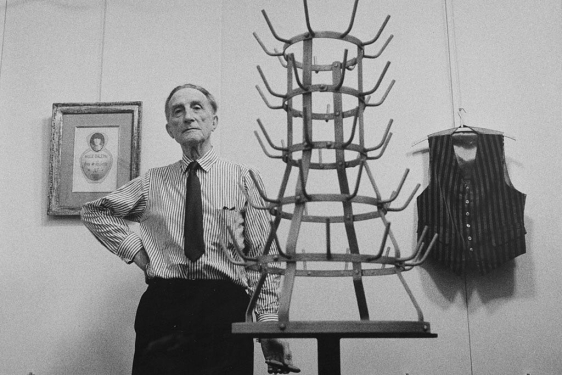
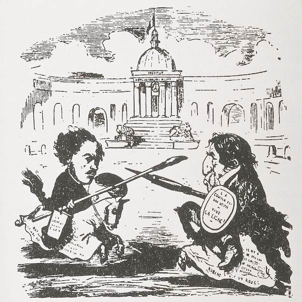

Pregunta 1
¿Qué artista pintó "La persistencia de la memoria" con los famosos relojes derretidos?
Siglos XIX - XX

¿Qué artista pintó "La persistencia de la memoria" con los famosos relojes derretidos?
¿Cuáles son características del Cubismo? (Selecciona todas las correctas)
¿Cuál es el nombre de este cuadro?

El Expresionismo Abstracto se desarrolló principalmente en:
¿Cuáles de estos artistas pertenecieron al impresionismo? (Selecciona todas las correctas)
Selecciona los cuadros que pertenezcan al movimiento realismo:
¿Cuáles de los siguientes son cuadros de Eugène Delacroix? (Selecciona todas las correctas)
¿Cuáles fueron vertientes del Expresionismo Abstracto? (Selecciona todas las correctas)
¿Qué obra marcó el inicio del Cubismo analítico?
¿Cuál es el nombre de este cuadro?

¿Cuál de las siguientes es característica del Futurismo?
¿Por qué surgió el movimiento Dadaísta?

¿Cuáles de estos artistas pertenecieron al movimiento De Stijl? (Selecciona todas las correctas)
¿Qué dos personajes se representan en duelo en la siguiente ilustración?

¿Quién escribió el "Manifiesto del Surrealismo" en 1924?
¿En qué se diferencian el Suprematismo del Constructivismo ruso?
¿Qué artista fue miembro del grupo expresionista alemán "Die Brücke"?
¿De qué estilo es el siguiente cuadro?